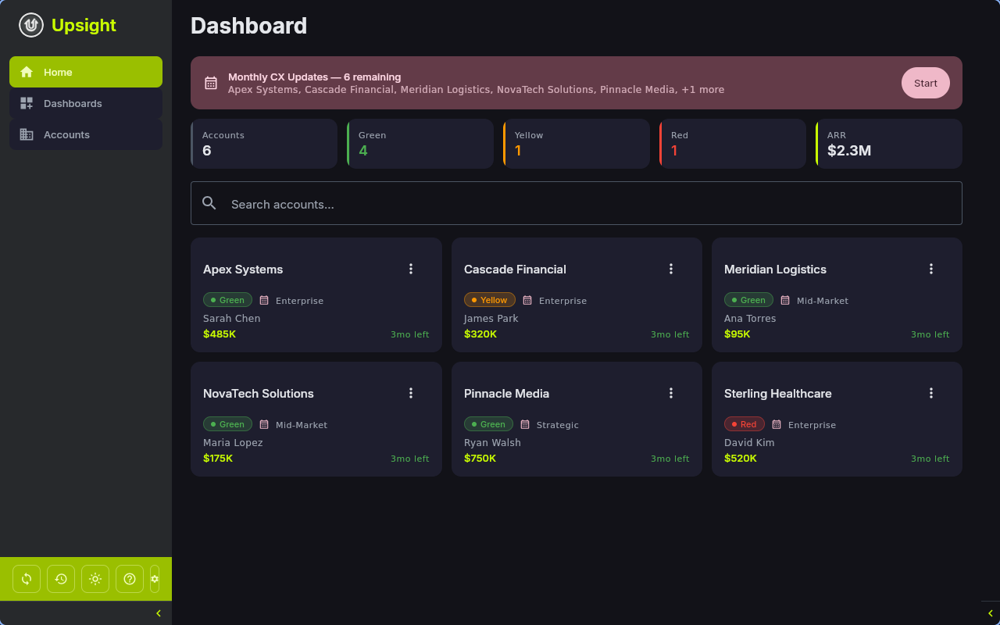
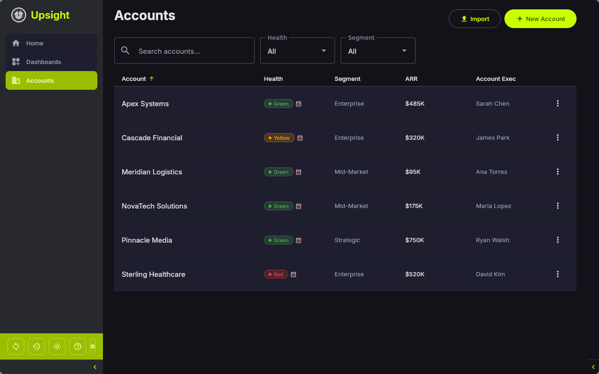
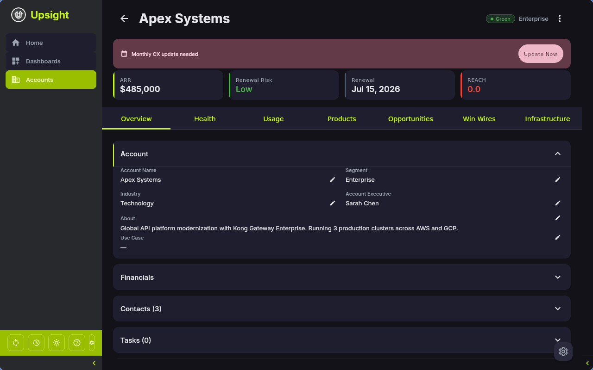

Account Management¶
Dashboard¶
The Dashboard is the home screen. It shows all your accounts as a card grid with summary metrics at the top.

Metrics Row¶
The top row displays five cards:
- Accounts -- total number of accounts
- Green -- accounts with Green health status
- Yellow -- accounts with Yellow health status
- Red -- accounts with Red health status
- ARR -- total annual recurring revenue across all accounts
Monthly Update Banner¶
When accounts are due for their monthly CX update, a banner appears below the metrics. It shows how many accounts still need updates and lets you launch the Monthly CX Update Wizard directly.
Account Cards¶
Each card shows the account name, health badge, customer segment, ARR, and account executive. Click a card to open the account detail view. Cards also show a calendar icon when the account needs its monthly update.
Search¶
Use the search field to filter accounts by name, industry, or account executive. The keyboard shortcut Ctrl+F focuses the search field.
Account List¶
Navigate to Accounts in the sidebar for a table view of all accounts.

Filtering and Sorting¶
- Search -- filter by account name
- Health dropdown -- filter by Green, Yellow, or Red
- Segment dropdown -- filter by Enterprise, Mid-Market, SMB, or Strategic
- Click any column header (Account, Health, Segment, ARR, Account Exec) to sort ascending or descending
- Active filters appear as chips below the filter row. Click the X on a chip to clear it, or use Clear all
Context Menu¶
Right-click any account row for quick actions:
- Open -- go to the account detail
- Summarize Meeting -- jump to meeting summaries for that account
Actions Menu¶
Each row has an actions button (three dots) with:
- CX Update -- launch the monthly update wizard for this account
- Summarize Meeting -- open the meeting summary screen
Creating Accounts¶
Click New Account on the Account List screen to open the creation dialog.
Import from Salesforce¶
If Salesforce CLI is configured, the dialog shows a search field at the top. Type an account name, click Search, and select a result to import the account with all its Salesforce data (industry, segment, ARR, health status, executive, and more).
Manual Creation¶
Below the Salesforce search (or as the only option if Salesforce is not configured), fill in:
- Account Name (required)
- Industry
- Segment -- Enterprise, Mid-Market, SMB, or Strategic
- Health Status -- Green, Yellow, or Red (defaults to Green)
Bulk Import¶
Click Import on the Account List screen to import multiple accounts at once from a CSV file or from Salesforce.
Account Detail¶
Click any account to open its detail view. The header shows the account name, health badge, and segment. A back arrow returns to the previous screen. A small settings button in the bottom-right opens the Account Setup dialog for editing metadata, links, and account deletion.

Tabs¶
The account detail has seven tabs:
Overview (Tab 1)¶
The primary tab showing:
- Metadata -- account name, segment, industry, account executive, about/description, and use case
- Quick Links -- clickable links to Salesforce, tickets/cases, files, contracts, account plan, success plan, Google Drive, and Slack channels (internal and external)
- Contacts -- collapsible list of contacts with name, email, role, and persona. Add contacts manually or import from Salesforce
- Tasks -- account-specific tasks with priority, due date, and completion status
- Actions -- quick action items with due dates
- Escalations -- tracked escalations with severity and resolution status
- Feature Requests -- feature requests with priority levels
- Notes -- team notes with type labels
- Interactions -- logged interactions (call, email, meeting) with date and description
- REACH Scores -- Relationship, Engagement, Adoption, Customer Value, Horizon scores on a 1-5 scale
Health (Tab 2)¶
CX health details including:
- CXM Sentiment -- current sentiment (Green/Yellow/Red) and CSM exec summary, editable with Salesforce write-back
- Relationship Health -- status and comments
- Customer Business Health -- status and notes
- 10 Health Indicators -- each with a status picklist and comments field (see Monthly CX Update for the full list)
Usage (Tab 3)¶
Consumption and product usage metrics:
- API Calls -- calls used, entitlement, and consumption percentage
- Gateway Services -- services used and entitlement
- Overall Consumption -- percentage from Salesforce
- Konnect Orgs -- linked Konnect organization IDs. For managing organizations, owner emails, team mappings, and the team hierarchy / org chart, see Teams & Konnect Orgs.
- Todoist Tasks -- if a Todoist project is linked, shows grouped tasks with completion, rescheduling, and section management
Products (Tab 4)¶
- Product Adoption Grid -- visual grid showing which products from your catalog the account has adopted. Click tiles to toggle adoption.
- Product List -- detailed list of adopted products with use case and notes
Opportunities (Tab 5)¶
- Opportunity Table -- all opportunities linked to the account from Salesforce
- Filters -- hide expired contracts, hide zero-ACV opportunities, filter by type, sort by close date
- CX Notes and CS Handoff Notes -- editable fields with Salesforce write-back
- Financial Summary -- aggregate ACV, TCV, and contract dates
Win Wires (Tab 6)¶
- Win Wire Documents -- imported PDF win wires with extracted metadata
- Fields -- deal type, close date, ACV, TCV, term, category, sales play, competitors, champion, business case, compelling event, required capabilities, highlights
- AI Extraction -- when adding a PDF, AI can extract fields automatically
- CSV Import/Export -- bulk import and export win wire data
Infrastructure (Tab 7)¶
- Infrastructure Items -- tracked infrastructure components from your catalog
- Details and Notes -- per-item details and notes fields
Account Setup Dialog¶
Click the settings button (gear icon) in the bottom-right to open the setup dialog. Here you can:
- Edit account metadata (name, segment, industry, executive)
- Set quick links (tickets URL, files URL, Google Drive, SFDC URL, contract URL)
- Link a Todoist project ID
- Manage Konnect orgs and Slack channels
- Sync from Salesforce (pulls latest data for this account)
- Delete the account
Warning
Deleting an account removes all associated data (contacts, tasks, notes, escalations, features, win wires, and more). This action cannot be undone.
Editing Account Data¶
Most fields on the account detail tabs are editable inline. Changes to write-back fields (CXM sentiment, CX play, health indicators, etc.) are automatically saved to the local database and pushed to Salesforce. See Salesforce Integration for details on which fields support write-back.